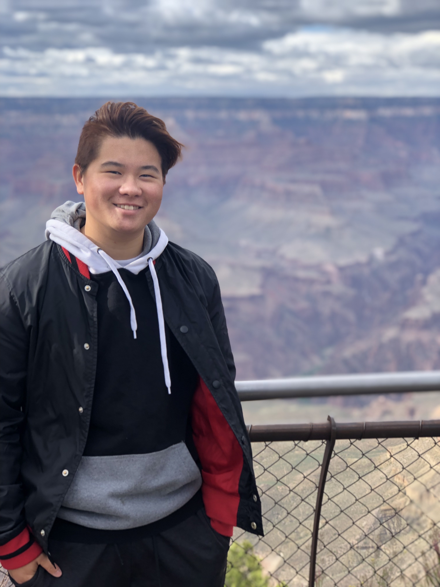

About Me
Summary
I am currently in a Master’s program in Computer Science at Northeastern University. Before enrolling in this program, I graduated from UCSB with a Bachelors of Art in Communication and in Sociology and participated in various research projects during undergrad. I decided to pursue a Computer Science Masters degree because I was interested in ways to improve upon the programs and machines used to conduct research and analyze large amounts of data. As a research assistant, I developed the skill to communicate well with members within my group as well as with people in other teams or departments as is common in the field of Computer Science. As a technical expert with Apple, I have become comfortable with learning quickly on-the-job, which can assist me in learning new languages or systems and software designs efficiently. In my MSCS program, I have programmed in Python, Java/Kotlin, and some C++. I have also learned how to use programming software such as the IntelliJ, DOSBox, and Swift for iOS. I have learned how to develop mobile applications in Android Studio. I am quick to build close relationships so that they feel comfortable working with me and vice versa, and I always ask coworkers how to best explain technical concepts to people who don’t have technical knowledge to operate products. When new products or software come out at work, I am quick to read up on the latest configurations and technical specifications so I can better address customer’s questions. I believe that my experience as a technical expert, in conjunction with the skills I am developing in my MSCS program, will make me a fit for roles in a software engineering internship. My current goal is to get experience working at a tech company, specifically in a software engineering position, to further my career in computer science.
Courses
- Web Development
- Computer Systems
- Algorithms
- Mobile Application Development
Projects
- NASA Space Apps Coding Challenge
Challenge Prompt:
Food for Thought: Your challenge is to consider the journey of food to your plate, determine how disruptions from the COVID-19 pandemic are affecting the food supply locally and globally, and propose solutions to address these issues.
Summary:Growcery is a platform that facilitates decentralized food distribution and production within urban, suburban, and rural areas. It will allow everyone, from windowsill growers and community gardeners to local farmers, to sell their harvest direct to consumers and businesses on demand. The platform provides not only an on-demand marketplace for local food but also incentives for people to become growers and produce food for themselves and their local community to earn extra income.
Hobbies
- Art/Drawing
- Kayaking
- Camping
- Photography
- Gaming
- Listening to music